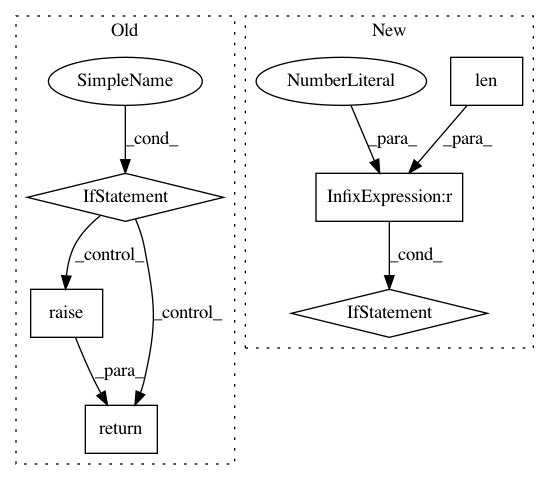

a6819ac67444b66143ab8e0cad8a42cb7635730d,autokeras/blocks/basic.py,ResNetBlock,build,#ResNetBlock#Any#Any#,531
Before Change
if pretrained is None:
pretrained = hp.Boolean("pretrained", default=False)
if not pretrained:
self.input_tensor = input_node
self.input_shape = None
model = super().build(hp)
return model.outputs
// Use pretrained weights.
// Do not use "version" as hp name, which is used in super class.
version = hp.Choice("pretrained_version",
list(RESNET_PRETRAINED.keys()))
pretrained_model = RESNET_PRETRAINED[version](weights="imagenet",
After Change
if pretrained is None:
pretrained = hp.Boolean("pretrained", default=False)
if len(self.models) > 1:
version = hp.Choice("version", list(self.models.keys()))
else:
version = list(self.models.keys())[0]
min_size = self.min_size
if hp.Boolean("imagenet_size", default=False):
min_size = 224
if (input_node.shape[1] < min_size or
In pattern: SUPERPATTERN
Frequency: 3
Non-data size: 6
Instances
Project Name: jhfjhfj1/autokeras
Commit Name: a6819ac67444b66143ab8e0cad8a42cb7635730d
Time: 2020-07-17
Author: haifengj@google.com
File Name: autokeras/blocks/basic.py
Class Name: ResNetBlock
Method Name: build
Project Name: reinforceio/tensorforce
Commit Name: f09b1d753bff6d85b32b52f01f4dee86511f3dbb
Time: 2017-10-21
Author: aok25@cl.cam.ac.uk
File Name: tensorforce/core/networks/layer.py
Class Name: Conv2d
Method Name: tf_regularization_loss
Project Name: reinforceio/tensorforce
Commit Name: f09b1d753bff6d85b32b52f01f4dee86511f3dbb
Time: 2017-10-21
Author: aok25@cl.cam.ac.uk
File Name: tensorforce/core/networks/layer.py
Class Name: Linear
Method Name: tf_regularization_losses